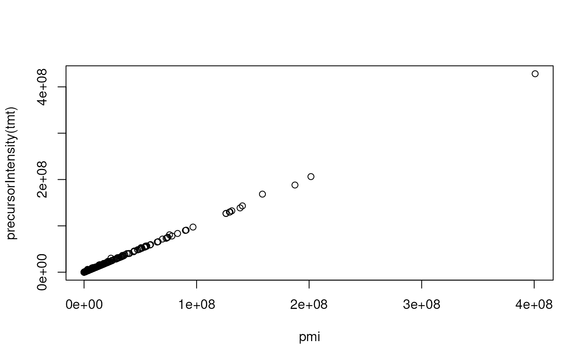

Some MS instrument manufacturers don't provide precursor intensities for
fragment spectra. These can however be estimated, given that also MS1
spectra are available. The estimatePrecursorIntensity() funtion defines the
precursor intensities for MS2 spectra using the intensity of the matching
MS1 peak from the closest MS1 spectrum (i.e. the last MS1 spectrum measured
before the respective MS2 spectrum). With method = "interpolation" it is
also possible to calculate the precursor intensity based on an interpolation
of intensity values (and retention times) of the matching MS1 peaks from the
previous and next MS1 spectrum. See below for an example.
Usage
estimatePrecursorIntensity(
x,
ppm = 20,
tolerance = 0,
method = c("previous", "interpolation"),
msLevel. = 2L,
f = dataOrigin(x),
BPPARAM = bpparam()
)Arguments
- x
Spectrawith MS1 and MS2 spectra.- ppm
numeric(1)with the maximal allowed relative difference of m/z values between the precursor m/z of a spectrum and the m/z of the respective ion on the MS1 scan.- tolerance
numeric(1)with the maximal allowed difference of m/z values between the precursor m/z of a spectrum and the m/z of the respective ion on the MS1 scan.- method
character(1)defining whether the precursor intensity should be estimated on the previous MS1 spectrum (method = "previous", the default) or based on an interpolation on the previous and next MS1 spectrum (method = "interpolation").- msLevel.
integer(1)the MS level for which precursor intensities should be estimated. Defaults to2L.- f
factor(or vector to be coerced tofactor) defining which spectra belong to the same original data file (sample). Defaults tof = dataOrigin(x).- BPPARAM
Parallel setup configuration. See
bpparam()for more information. This is passed directly to thebackendInitialize()method of the MsBackend.
Examples
#' ## Calculating the precursor intensity for MS2 spectra:
##
## Some MS instrument manufacturer don't report the precursor intensities
## for MS2 spectra. The `estimatePrecursorIntensity` function can be used
## in these cases to calculate the precursor intensity on MS1 data. Below
## we load an mzML file from a vendor providing precursor intensities and
## compare the estimated and reported precursor intensities.
tmt <- Spectra(msdata::proteomics(full.names = TRUE)[5],
backend = MsBackendMzR())
pmi <- estimatePrecursorIntensity(tmt)
plot(pmi, precursorIntensity(tmt))

## We can also replace the original precursor intensity values with the
## newly calculated ones
tmt$precursorIntensity <- pmi